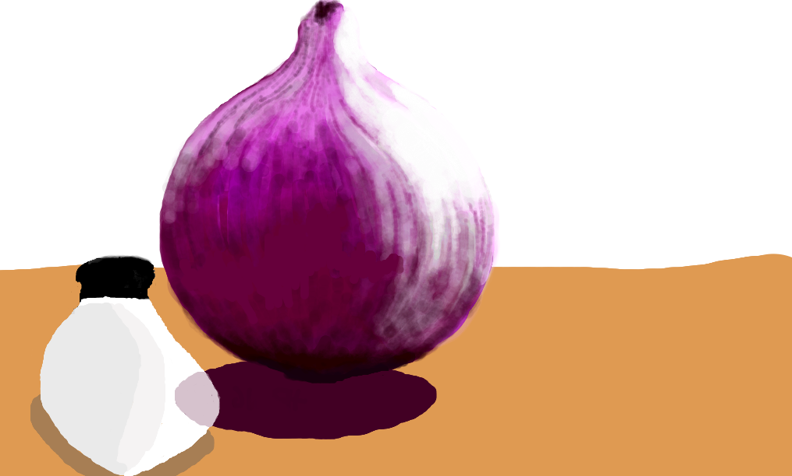
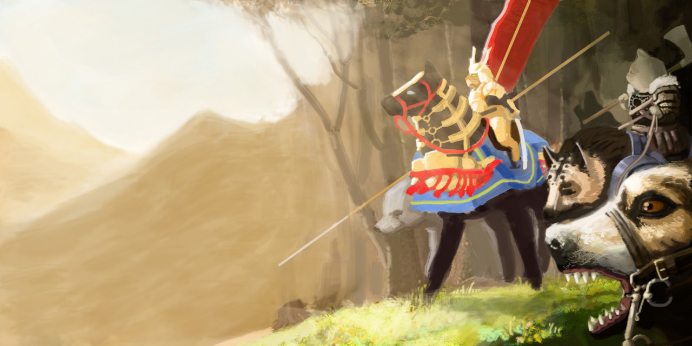

Art
School of Athens

Copied from Raphael. The characters are actually color coded in the original, so you can tell whose side each person was on.
The Magic Flute

Swiss Army Knife.

Centaur
Cannon Towns

Candle Towns.
Good idea for fantasy world building: mixing different scales.
Some cute cars

Onion

Hot Air Balloon Bird
Cats and dogs.

And an older version, which I like better:
Flying Nautiluses

Been experimenting with things coming up close to the camera.
Stag

Wolf Stag

Embryo
Colossus I

Colossus II

Emperor Penguin
Dragon Knight

Should try adding real photos to drawings more often.
Dragon-riding Knight
Also made some logos to go with this dragon-riding lance-wielding knight concept:
Dragon Lance I, Dragon Lance II,
Dragon Lance II,
 Dragon Lance III.
Dragon Lance III.
Cat and Mouse

Wyrms

Wyrm Eggs

Time Traveler

One with the Machine

Light and Magic

Gotta reuse the sorcerers with their cone heads and fancy hats and pointy noses.
Portrait of a Blind Man
One Man Band
Another Multitasker

Been trying out a new minimalist technique where you don't overwork your strokes. Pretty fast if you know what you're painting.
Christian Bale in Fallout 4
These RPG character creation tools are amazing! Now everyone can sculpt. What else is impossible?!
Chloe Moretz

Chess Models

For a game I'm making called Ragnarook. Should do more sculpting, and modelling. And rigging. Oh so much to learn.
Portraits


Drew these in a giant art book that has a lot of white space.
More sketches

Double Rainbow

Light Bulb

There's always a better way
Use reference, especially if you're painting imaginary things.
Portrait without Face

Liking the square brush.
More Portrait
No one in particular

Ram
Light study

Was painting someone else but looks a bit like Jennifer Lawrence.
Learning how to model buildings
Anglerfish


Photo editing practice

2 Oct 2016. Yuu Aoi

10 Oct 2016. Angela Sarafyan from Westworld

Donnie Yen
In Ford's (Anthony Hopkins) office in Westworld there's a mask that looks a lot like Donnie Yen.
Portrait practice
Faces are easier to paint if you're not worried about who they look like.
23 Oct 2016. Nancy Skerret (Nell Hudson) from Victoria

Polar bear
Learning to use the soft brush again, and blurring, lots of blurring.